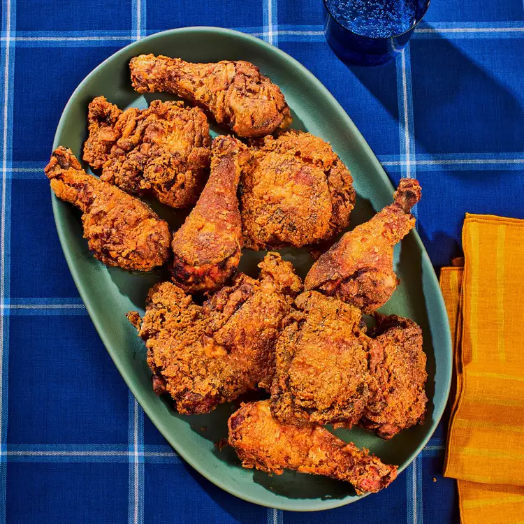

Fried Chicken
Description
You can't go wrong with some fried chicken. You just get it well seasoned
and of course wash your meat (always). Here is a simple fried chicken
recipe you are going to enjoy pairing with many different sides and sauces.
Ingredients
- Choice of: Chicken Wings, Thighs, Drums or Tenders/Breasts
- Salt
- Black Pepper
- Fish Sauce
- Flour
- Paprika
- Onion Powder
- Garlic Powder
- Chicken Boullion
- Eggs
- Seasoning Salt
Steps to Making this Fried Chicken
- Lets get the chicken washed up and rinsed and dried.
- In a mixing bowl lets get all the spices and chicken to become family.
- As previously said before we don't use measurements for spices so lets eyeball them into the mixing
bowl with the chicken.
- When ready to cook chicken we add flour and an egg for help with binding to the mix.
- Lets get a pan or pot filled with oil. Only enough to cover about half the chicken. Drop a few in
after the oil is nice and hot on medium high heat. Letting each side cook until well browned to ensure
chicken is cooked throughout.